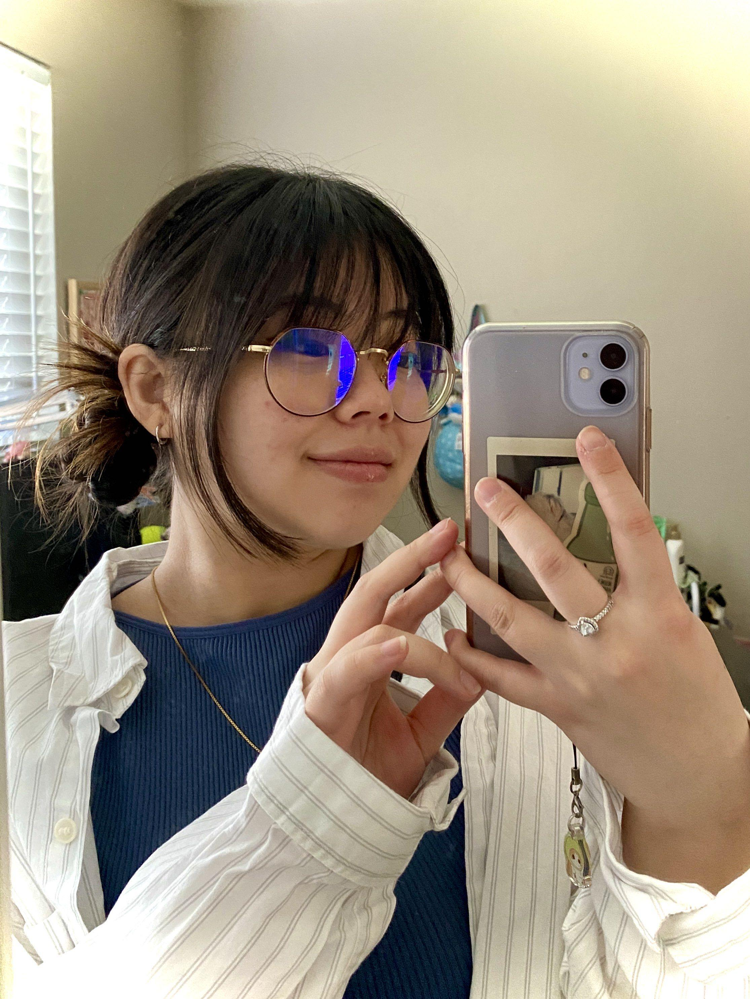
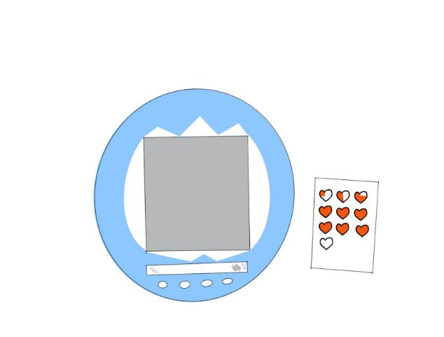

Hannah Takeda
(She/ Her)
About the Artist
Hannah Takeda is a Japanese-American multimedia artist based in the Bay Area of California. Currently in her fourth year at San José State University, she explores a wide range of artistic media, including digital and traditional illustration, photography, and video editing. Her inspirations come from her family, nature, anime, and the hobbies and lifestyle that shape her daily life. Each project reflects pieces of her personal world: her interests, memories, and the simple joys that inspire her to keep creating.
Pixel Heart

Pixel Heart is a nostalgic yet reflective piece that reimagines the early 2000s digital pet toy as a reminder of self-care. Shaped like a Tamagotchi, the mirror invites viewers to see themselves as the “pet” inside, turning what was once a digital act of caretaking into a personal reminder to nurture ourselves. The piece features small, movable decals inspired by the toy’s buttons, allowing people to customize their reflection and bring their own sense of self-care into the work. Designed with early 2000s colors and materials, it feels playful yet meaningful, a mix of nostalgia and reflection.